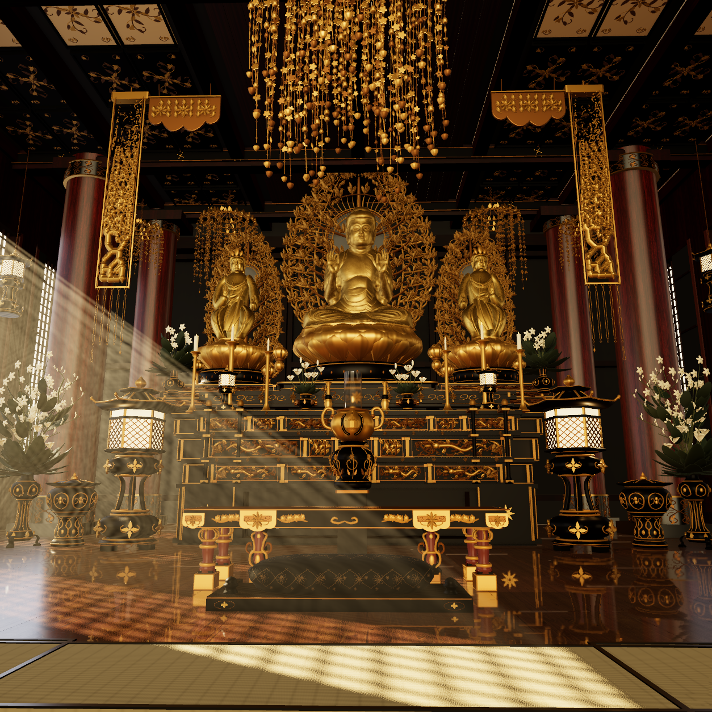
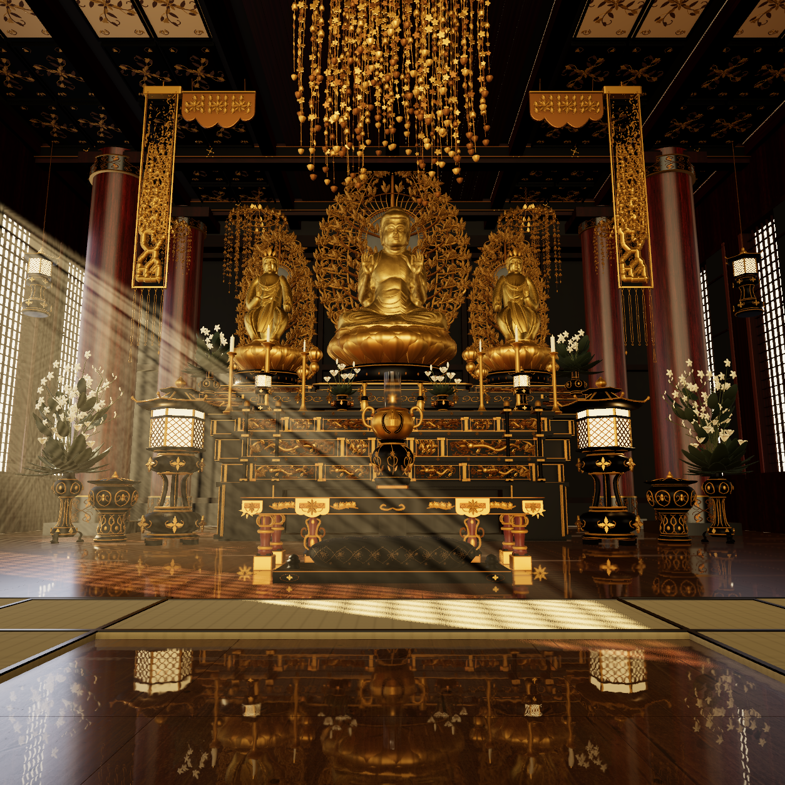

Only the camera path module changed. All199 other R08 scene files are byte-exact. Start on the real central figure/robe/lotus beside the censer, retreat continuously at low eye height, end at the original reference pose. R02 uses a measured actual face anchor and disables moving DOF throughout, preserving eyes/lips/robe detail with no focus snap; f/11 is retained as the optical parameter. These are original actual native PNGs, not image edits or an encoded film. Derived imagery: CC BY-NC-SA4 for authorized personal noncommercial use.
Exact source, actual poses, focus, preservation and limits


Continuous motion and overall photographic fidelity remain unaccepted; no scalp, body, material or lighting changes were made.